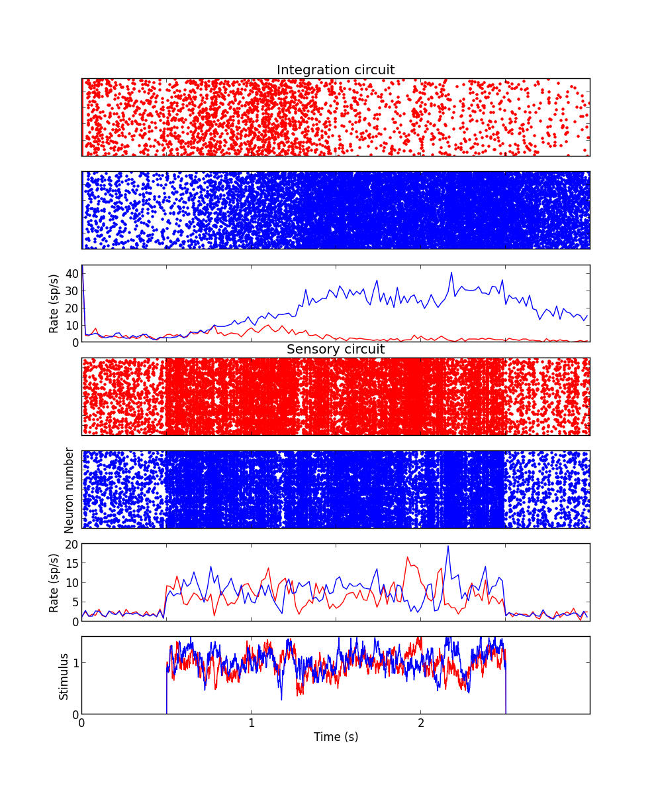

Copyright (C) 2014 Klaus Wimmer This program is free software: you can redistribute it and/or modify it under the terms of the GNU General Public License as published by the Free Software Foundation, either version 3 of the License, or (at your option) any later version. This program is distributed in the hope that it will be useful, but WITHOUT ANY WARRANTY; without even the implied warranty of MERCHANTABILITY or FITNESS FOR A PARTICULAR PURPOSE. See the GNU General Public License for more details. You should have received a copy of the GNU General Public License along with this program. If not, see http://www.gnu.org/licenses/. SUMMARY: This program implements the model of: K Wimmer, A Compte, A Roxin, D Peixoto, A Renart & J de la Rocha. Sensory integration dynamics in a hierarchical network explains choice probabilities in cortical area MT. Nat. Commun. 6:6177 doi: 10.1038/ncomms7177 (2015). A complete description of the model is provided in the methods of the paper and the supplementary material (in particular the Supplementary Tables 1-4). The program runs a single simulation and outputs a figure, similar to the one shown in Fig 1b in the paper:  The code is not at all optimized in order to keep it simple, clean and platform independent. Depending on your CPU, the execution can take several minutes. REQUIREMENTS: You will need Python and the Brian simulator installed. Plotting requires matplotlib, a Python plotting library. USE: To run the simulation, just execute the command: python run_hierarchical_model.py CONTACT: wimmer.klaus@gmail.com